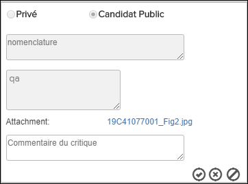

Non applicable pour Pinpoint Standalone Light.
Un utilisateur disposant des autorisations pour créer, modifier et supprimer des annotations peut utiliser cette fonction pour examiner et approuver ou rejeter les annotations créées en tant que candidat public.
Cette icône  apparaît dans l'en-tête Annotations /
Supplemental Contents pour les administrateurs lorsqu'il existe des
annotations des candidats à examiner. Le nombre indique combien de candidats publics
figurent dans le document.
apparaît dans l'en-tête Annotations /
Supplemental Contents pour les administrateurs lorsqu'il existe des
annotations des candidats à examiner. Le nombre indique combien de candidats publics
figurent dans le document.
Pour examiner une annotation de candidat publique, suivez les étapes ci-dessous:
-
Cliquez sur l'icône en forme de crayon (
 ou
ou
 ) pour activer.
) pour activer.
Cette boîte de dialogue apparaît lorsque vous modifiez le champ "Afficher les annotations", par exemple:
